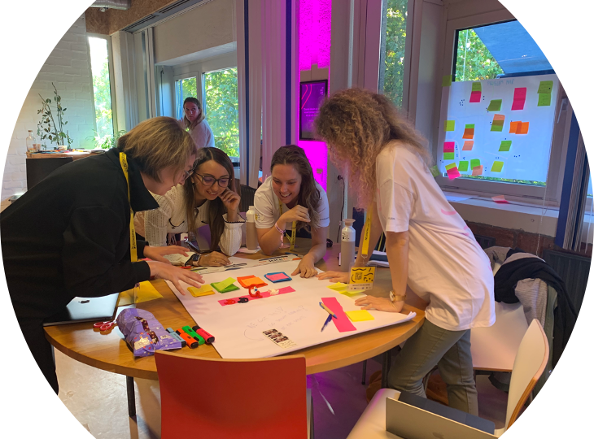
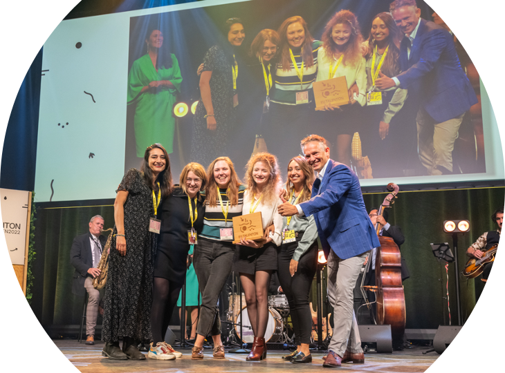

During the first-ever edition of the EU TalentON, I got teamed up with three bright young minds: Bibiana Barrera, Celine Everaert and Kiira Sarasjärvi. As the Bright Ribbons, we were challenged to come up with the best scientific solutions to the Cancer Mission of the European Union. Hence, we developed a game, called The Big C, to defeat cancer taboos and misconceptions.

"Earn points by solving dilemmas, addressing taboos and answering
questions about cancer.
But be careful! The Big C will do its best to perpetuate stigma
and shame."
It is a fun and easy-to-play game to open the discussion and increase the knowledge. We want it to be inclusive, accessible and family-proof, so everyone can play and learn.
After 2.5 (intense) days of getting to know each other, brainstorming, learning new entrepreneurial and creative skills, working very hard, and of course, pitching, our project got awarded:
 © EUtalentOn Comms on Flickr
Do you want to help us creating the game? Submit your misconceptions, taboos and questions about cancer using this form.
More information and updates soon to come! 😉